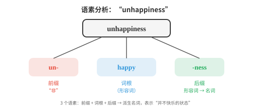
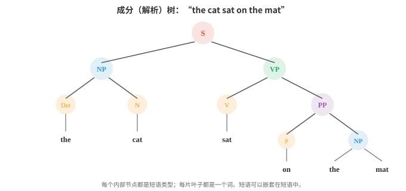
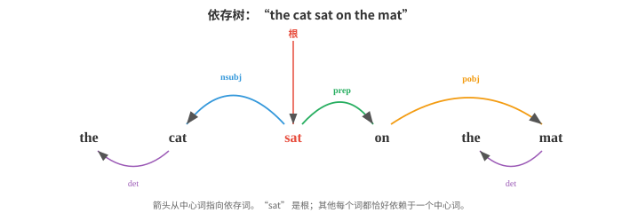

语言学基础¶
语言学为自然语言处理（Natural Language Processing, NLP）系统隐式学习和利用的结构提供术语框架。本节介绍形态学、句法学、语义学、语用学、音系学、成分分析、依存分析和分布假说；这些语言科学概念构成了 AI 中分词、语法和语义的基础。
- 在构建能够理解或生成语言的系统之前，必须先理解语言本身如何运作。
大白话
想让机器读懂语言，先要弄清人类语言有哪些层次和规律，不能只把文字当成一串符号。
- 语言学是研究语言的科学，自然语言处理持续借用其中的概念术语。
大白话
语言学提供“语言由什么组成、怎么表达意义”的地图；NLP 用计算方法把这张地图变成可工作的系统。
- 即使是从原始数据中学习语言的现代神经模型，也会隐式地重新发现语言学家数十年来整理出的许多结构。
大白话
大模型不一定被显式教过语法规则，但为了预测和生成文字，往往会从数据里学到类似的结构。
- 语言的每个层面都有结构：构成单词的语音、构成单词的成分、把单词组合成句子的规则、句子承载的意义，以及语境塑造解释的方式。我们将自下而上地逐层学习。
大白话
语言像多层建筑：声音组成词，词组成句，句传达意思，语境再决定真正想表达什么。
- 形态学（morphology）研究单词的内部结构。单词不是不可再分的原子，而是由更小且有意义的单位构成，这些单位称为语素（morpheme）。
大白话
形态学把单词拆开看：一个词常由多个带意义的小零件拼出来，这些零件就是语素。
- 单词 “unhappiness” 含有三个语素：“un-”（表示“非”的前缀）、“happy”（词根）和 “-ness”（把形容词变为名词的后缀）。每个语素都对词义有所贡献。
大白话
把词拆成“否定 + 核心意思 + 词性变化”，就能看出它为什么表达“不快乐这种状态”。
- 词根（root）（或词干 stem）是承载主要意义的核心语素。“happy”、“run”、“compute” 都是词根。
大白话
词根是一个词最核心的意思，前后加东西通常是在它的基础上补充时间、否定或词性。
- 词缀（affix）是附着在词根上、用于修饰词根的语素。
大白话
词缀像装在词根上的附件，能改变方向、时间、数量或词类，但通常不取代核心意思。
- 英语有前缀（prefix）（位于词根前：un-、re-、pre-）和后缀（suffix）（位于词根后：-ing、-ed、-tion）。有些语言还有中缀（插入词根内部）和环缀（包围词根）。

大白话
英语多在词首或词尾加部件；其他语言还能把部件塞进词中或前后包住词根。图示展示了词可以被系统地拆开。
- 形态过程有两类。屈折（inflection）在不改变词的核心意义或词类的情况下，改变它的语法属性：“run” 变为 “runs”（第三人称）、“running”（进行体）、“ran”（过去时）。它仍然是表达同一动作意义的动词。
大白话
屈折只是让同一个词适配时态、数量或人称，核心意思和“它是什么词”都不变。
- 派生（derivation）创造新词，且通常会改变词类：“happy”（形容词）变为 “happiness”（名词），“compute”（动词）变为 “computation”（名词）再变为 “computational”（形容词）。每次派生都会改变词义和语法类别。
大白话
派生是在词根上造新词，常把“做某事”变成“某种事物”或“某种性质”，不只是换个语法形式。
- 各种语言的形态复杂度差异很大。英语相对分析型（analytic），每个词中的语素较少，更多依赖词序。
大白话
英语常把语法关系拆成多个短词或依靠词序表达，而不是把大量信息黏进一个很长的词里。
- 土耳其语和芬兰语属于黏着语（agglutinative），一个词可串接许多语素。阿拉伯语和希伯来语使用模板式（templatic）形态：词根是如 k-t-b（“写”）这样的辅音骨架，插入元音模式后形成不同单词：kitab “书”、kataba “他写了”、maktub “被写的”。
大白话
有些语言把很多语法信息塞进一个词；另一些语言像在辅音骨架里换不同模板。分词器不能假设所有语言都像英语。
- 形态学之所以对自然语言处理重要，是因为它会影响分词（tokenisation）。按词分词器会把 “run”、“runs”、“running” 和 “ran” 当作四个无关的符号。
大白话
机器若把这些形式完全当成陌生词，就会浪费数据，也看不出它们都和“跑”有关。
- 具备形态意识的系统会识别出它们共享同一词根。将在文件 02 中介绍的子词分词（subword tokenisation，BPE、WordPiece），是形态分析的统计近似。
大白话
子词分词未必真正懂语言学，却常能把常见的词根和词缀重复利用，达到近似的效果。
- 句法学（syntax）研究单词如何组合成短语和句子。每种语言都有管理词序和结构的规则；违反这些规则会产生不通的语句。
大白话
句法学关心的不是每个词单独是什么意思，而是它们按什么顺序、什么层级组合才通顺。
- “The cat sat on the mat” 是合乎英语语法的句子；“Mat the on sat cat the” 则不是。
大白话
用的是同一批词，排列方式不同就可能完全不成句，说明语言结构不是可随意调换的。
- 描述句法结构主要有两个框架。
大白话
一种把句子看成层层嵌套的短语，另一种直接看词和词之间谁依赖谁。
- 短语结构语法（phrase structure grammar）（也称成分语法 constituency grammar）认为，句子由短语层层嵌套构成。一个句子（S）由名词短语（NP）和动词短语（VP）组成。
大白话
成分语法先把词打包成短语，再把短语打包成更大的短语，像一层层括号。
- 名词短语可能由限定词（Det）和名词（N）组成；动词短语可能由动词（V）和名词短语组成。这些规则会构造出一棵树：

大白话
这张树显示哪些词先组成小组、再组成大组。树的分支不是装饰，而是在记录句子结构。
- 这棵树称为成分树（constituency tree）（或解析树 parse tree）。每个内部节点是短语类型，每个叶节点是一个词。它捕捉了层级分组关系：“on the mat” 是一个单位（介词短语），“sat on the mat” 是一个单位（动词短语），整体则是一个句子。
大白话
成分树告诉我们哪些词必须一起理解。例如“on the mat”整体修饰“sat”，不能随便拆成彼此无关的词。
- 上下文无关文法（context-free grammar, CFG）将这些规则形式化。它由一组产生式规则组成，每条规则的形式为 \(A \to \alpha\)，其中 \(A\) 是非终结符（如 NP 或 VP 这样的短语类型），\(\alpha\) 是终结符（词）与非终结符构成的序列。例如：
S → NP VP
NP → Det N
NP → Det N PP
VP → V NP
VP → V PP
PP → P NP
Det → "the" | "a"
N → "cat" | "mat" | "dog"
V → "sat" | "chased"
P → "on" | "under"
大白话
CFG 像一套拼句子的说明书：某类短语可以替换成哪些更小部分。规则既能生成句子，也能反过来检查一句话怎么组成。
- 从 S 开始反复应用规则，就能生成该文法允许的全部句子。解析则是反向过程：给定一个句子，找到生成它的树（或多棵树）。具有多棵有效解析树的句子称为句法歧义（syntactically ambiguous）。“I saw the man with the telescope” 有两种解析：我用望远镜看到了那个人，或者我看到了带着望远镜的那个人。
大白话
一句话如果能画出两棵合理的树，意思就会含糊。解析需要找到正确结构，语境常用来消除这种歧义。
- 依存语法（dependency grammar）采取不同视角。它不描述短语嵌套，而是描述词语之间的直接关系。除句子的根以外，句中每个词都依赖于恰好另一个词（它的中心词（head））。由此得到一棵依存树（dependency tree），其边带有语法关系标签（主语、宾语、修饰语等）。

大白话
依存语法直接给每个词找“它归谁管”，并标记关系，例如谁是动作的执行者、谁是对象。
- 在依存视角中，“sat” 是根。“cat” 作为主语（nsubj）依赖于 “sat”。“on” 作为介词修饰语依赖于 “sat”。“mat” 作为介词宾语依赖于 “on”。每个词都恰好从属于一个中心词，构成一棵树。
大白话
在这张树里，核心动词“sat”是全句中心；其他词通过一条条关系边挂在它或其子节点上。
- 依存语法已成为现代自然语言处理的主导框架，因为统计解析器更容易生成依存树，且这些关系与语义角色（谁对谁做了什么）的映射更直接。
大白话
对机器来说，直接知道“谁做了什么给谁”很实用，所以依存关系常用于信息抽取和下游语义任务。
- 配价（valency）描述一个动词需要多少个论元（argument）。“sleep” 是不及物（intransitive）动词（一个论元：睡觉者）。“eat” 是及物（transitive）动词（两个论元：吃的人和被吃的东西）。“give” 是双及物（ditransitive）动词（三个论元：给予者、被给予物和接收者）。了解动词的配价能约束哪些解析树是有效的。
大白话
不同动词像不同接口：有的只要一个参与者，有的必须带对象，有的还要接收者。配价能帮系统排除缺关键成分的分析。
- 语义学（semantics）研究意义。句法告诉你句子如何构成；语义告诉你它表达什么。
大白话
句法解决“这句话结构对不对”，语义解决“它到底在说什么”。两者缺一个都不算真正理解。
- 词汇语义学（lexical semantics）关注单个词的意义。词语之间以系统性的方式相互关联：
大白话
词不是孤立标签，很多词在意义上有亲近、相反、包含或部分整体等关系。
-
同义关系（synonymy）：意义（近乎）相同的词。“big” 和 “large” 是同义词。真正完全同义的词很少，内涵或用法几乎总有细微差异。
大白话
同义词通常能在不少场景互换，但语气、搭配和使用场合常有细微不同。
-
反义关系（antonymy）：意义相反的词。“hot” 与 “cold”、“buy” 与 “sell”。
大白话
反义词把同一维度的两端对照起来，例如温度高低或交易中的买卖双方。
-
上位/下位关系（hypernymy/hyponymy）：“是一种”的关系。“dog” 是 “animal” 的下位词（一只狗是一种动物）。“animal” 是 “dog” 的上位词。它们构成分类层级。
大白话
这是类别树关系：狗属于动物，动物是更宽的一层类别。
-
部分整体关系（meronymy）：“是……的一部分”的关系。“wheel” 是 “car” 的部分词。
大白话
这不是“是一种”，而是“组成它的一部分”，例如车轮和汽车。
-
一词多义（polysemy）：一个词具有多个相关的意义。“bank” 可以指金融机构或河岸。语境会消解这种歧义。
大白话
同一个拼写不一定只对应一个意思，前后文决定这次说的是哪一种。
- 词义消歧（word sense disambiguation, WSD）是在给定语境中确定一个多义词意图使用哪种词义的任务。在 “I deposited money at the bank” 中，正确的是金融义；在 “We sat by the river bank” 中，正确的是地理义。词义消歧曾是早期自然语言处理的核心问题；现代上下文嵌入（contextual embeddings，如 ELMo、BERT）通过为同一词的不同用法生成不同的向量表示，已在很大程度上解决了它。
大白话
系统必须看整句才能知道 bank 是银行还是河岸。上下文模型的优势正是能让同一词在不同句子里有不同表示。
- 组合语义学（compositional semantics）研究单个词的意义如何组合成短语或句子的意义。组合性（compositionality）原则（归于 Frege）认为，复杂表达式的意义由其各部分的意义以及组合这些部分的规则决定。“The cat chased the dog” 与 “the dog chased the cat” 意义不同，因为句法结构（谁是主语，谁是宾语）会与词义相互作用。
大白话
句意不只是词典释义相加，还取决于词在结构中担任什么角色。换主语和宾语，含义就完全变了。
- 并非所有意义都具有组合性。像 “kick the bucket”（意为“死亡”）这样的习语（idiom），其意义无法从组成部分推导出来。这对任何组合式方法都是挑战。
大白话
习语像固定暗号，逐字翻译会错。模型必须从大量使用场景中整体记住它的真实意思。
- 分布式语义（distributional semantics）是支撑现代自然语言处理的计算语义方法。分布假说（distributional hypothesis）（Firth，1957）指出：“你可以通过一个词所结交的同伴来认识它。”出现在相似语境中的词往往具有相似意义。这是词嵌入（word embeddings，如 Word2Vec、GloVe）的理论基础，将在文件 03 中进一步学习。
大白话
常和相似词一起出现的词，通常也有相似用途。机器不必先读词典，可以从“它周围总是谁”推测词义。
- 语用学（pragmatics）研究语境如何影响意义。同一句话会因说话者、时间、地点和原因而具有不同意义。
大白话
语用学关心的是话在当下到底想达到什么效果，不能只按字面逐词解释。
- “Can you pass the salt?” 在句法上是询问能力的是非问句；在语用上，它是一个请求。你不会回答 “Yes, I can” 后便坐着不动。理解这一点需要字面词语之外的知识，尤其是对言语行为（speech acts）惯例的了解。
大白话
人说“你能吗”常不是考能力，而是在礼貌地请求行动。机器要理解这种隐含目的，才不会答非所问。
- 言语行为理论（speech act theory）（Austin、Searle）区分：
大白话
一句话既有字面内容，也有说话者的意图，还会产生实际效果。这三层不能混为一谈。
-
言内行为（locutionary act）：字面内容（“Can you pass the salt?”）
大白话
这是实际说出口的句子本身。
-
言外行为（illocutionary act）：意图功能（一个请求）
大白话
这是说话者真正想做的事，例如请求、承诺或警告。
-
言后行为（perlocutionary act）：对听者产生的效果（听者递盐）
大白话
这是听者受话影响后实际做出的反应。
- 会话含义（implicature）（Grice）是被暗示却未被明确说出的意义。若有人问 “Is John a good cook?”，而你回答 “He's British”，你没有按字面回答问题，但听者可能会透过文化刻板印象（无论这是否公平）推断你的意思是“不是”。Grice 的合作原则（cooperative principle）认为，说话者通常努力做到信息充分、真实、相关、清楚；听者会假定这些准则成立，据此解释话语。
大白话
人经常话不说满，听者会根据“对方应该在配合交流”的默认前提补出暗示。机器最难的是分清暗示、玩笑和真实陈述。
- 共指（coreference）是一种语用现象，指不同表达式指向同一实体。在 “Alice went to the store. She bought milk” 中，“she” 指代 Alice。消解共指对于理解多句文本至关重要，也是自然语言处理的一项关键任务。
大白话
“她”“这个人”“那位顾客”可能都在说同一个对象。找准指代，系统才能把跨句信息接起来。
- 篇章结构（discourse structure）描述句子如何连接成连贯文本。叙事有开端、发展和结尾；论证有主张和证据。修辞结构理论（Rhetorical Structure Theory, RST）将文本分析为篇章单元之间的关系树（展开、对比、因果等）。
大白话
段落不是句子随便排在一起，而是有因果、对比、举例和结论等关系。理解这些关系才会读懂整篇文章。
- 语用学是自然语言处理中最困难的部分。现代语言模型通过训练数据隐式处理了大量句法和语义，但语用推理、反讽理解、会话含义和依赖语境的意义理解，仍是前沿挑战。
大白话
规则和词义还可以从文本中学，真正要猜说话者没说出的意图、讽刺和背景知识，至今仍容易出错。
- 音系学（phonology）研究语言的声音系统。本章聚焦文本，但简要概览可衔接到音频与语音章节（第 09 章）。
大白话
音系学研究语言里的声音怎样区分意义，是把文字系统和语音系统接起来的基础。
- 音位（phoneme）是区分意义的最小语音单位。英语约有 44 个音位。“bat” 和 “pat” 只相差一个音位（/b/ 与 /p/），这一差异会完全改变意义。这称为最小对立体（minimal pair）。
大白话
只换一个声音就能换一个词，说明这个声音在该语言中有区分意义的作用。
- 音位变体（allophone）是同一音位不改变意义的不同实际发音。“pin” 中的 “p”（送气，带有一股气流）和 “spin” 中的 “p”（不送气）在英语里都是 /p/ 的音位变体；母语者会将它们视为同一个音。
大白话
人耳会把一些细微发音差别归为同一个音，因为在该语言里它们不会改变词义。
- 国际音标（International Phonetic Alphabet, IPA）为所有语言的音位提供标准化记法。单词 “cat” 可标为 /kæt/。国际音标是书面文本与语音系统之间的桥梁。
大白话
IPA 用统一符号准确记录怎么发音，不受普通拼写习惯影响，方便文字和语音系统对接。
- 韵律（prosody）包括语音的节奏、重音和语调。“I didn't say he stole the money” 会因重读的词不同而有七种不同意义。韵律承载着纯文本丢失的信息，因此文本转语音系统必须认真建模它。
大白话
同一句字，重音和语调不同就可能是在否认不同部分。纯文本丢了这些线索，语音合成必须把它们补回来。
- 在自然语言处理中，音系知识用于文本转语音（字形到音位转换）、语音识别（将声学信号映射为音位），甚至也用于拼写纠正和音译。
大白话
声音规律不只服务语音任务，也能帮助判断拼写、读音相近词和不同文字之间的转写。
编程任务（使用 CoLab 或 notebook）¶
-
使用常见前缀和后缀列表，构建一个简单的形态分析器，将英语单词拆分为可能的语素。
prefixes = ['un', 're', 'pre', 'dis', 'mis', 'over', 'under', 'out', 'non'] suffixes = ['ing', 'ed', 'ly', 'ness', 'ment', 'tion', 'able', 'ible', 'er', 'est', 'ful', 'less', 'ous'] def analyse_morphemes(word): """Simple morpheme analysis using known affixes.""" parts = [] remaining = word.lower() # Check prefixes for p in sorted(prefixes, key=len, reverse=True): if remaining.startswith(p) and len(remaining) > len(p) + 2: parts.append(f"[prefix: {p}]") remaining = remaining[len(p):] break # Check suffixes for s in sorted(suffixes, key=len, reverse=True): if remaining.endswith(s) and len(remaining) > len(s) + 2: root = remaining[:-len(s)] parts.append(f"[root: {root}]") parts.append(f"[suffix: {s}]") remaining = None break if remaining is not None: parts.append(f"[root: {remaining}]") return parts for word in ['unhappiness', 'reusable', 'disconnected', 'overreacting', 'kindness']: print(f"{word:20s} → {' + '.join(analyse_morphemes(word))}") -
使用递归下降方法实现一个简单的上下文无关文法解析器。定义一套小型文法，并将一个句子解析为成分树。
class CFGParser: """Recursive descent parser for a tiny English grammar.""" def __init__(self, tokens): self.tokens = tokens self.pos = 0 def peek(self): return self.tokens[self.pos] if self.pos < len(self.tokens) else None def consume(self, expected=None): tok = self.peek() if expected and tok != expected: return None self.pos += 1 return tok def parse_det(self): if self.peek() in ('the', 'a'): return ('Det', self.consume()) return None def parse_noun(self): if self.peek() in ('cat', 'dog', 'mat', 'man'): return ('N', self.consume()) return None def parse_verb(self): if self.peek() in ('sat', 'chased', 'saw'): return ('V', self.consume()) return None def parse_prep(self): if self.peek() in ('on', 'under', 'with'): return ('P', self.consume()) return None def parse_np(self): save = self.pos det = self.parse_det() noun = self.parse_noun() if det and noun: # Check for optional PP pp = self.parse_pp() if pp: return ('NP', det, noun, pp) return ('NP', det, noun) self.pos = save return None def parse_pp(self): save = self.pos prep = self.parse_prep() np = self.parse_np() if prep and np: return ('PP', prep, np) self.pos = save return None def parse_vp(self): save = self.pos verb = self.parse_verb() if verb: np = self.parse_np() if np: return ('VP', verb, np) pp = self.parse_pp() if pp: return ('VP', verb, pp) self.pos = save return None def parse_sentence(self): np = self.parse_np() vp = self.parse_vp() if np and vp and self.pos == len(self.tokens): return ('S', np, vp) return None def print_tree(tree, indent=0): if isinstance(tree, str): print(' ' * indent + tree) elif isinstance(tree, tuple): print(' ' * indent + tree[0]) for child in tree[1:]: print_tree(child, indent + 2) sentences = [ "the cat sat on the mat", "a dog chased the cat", ] for sent in sentences: tokens = sent.split() parser = CFGParser(tokens) tree = parser.parse_sentence() print(f"\n'{sent}':") if tree: print_tree(tree) else: print(" (no parse found)") -
通过构建一个简单的词图来探索词汇关系。给定含有同义、反义和上位词关系的小型词汇表，找出词语之间的路径。
relations = { ('big', 'large'): 'synonym', ('big', 'small'): 'antonym', ('small', 'tiny'): 'synonym', ('dog', 'animal'): 'hypernym', ('cat', 'animal'): 'hypernym', ('puppy', 'dog'): 'hypernym', ('happy', 'glad'): 'synonym', ('happy', 'sad'): 'antonym', ('hot', 'cold'): 'antonym', ('hot', 'warm'): 'synonym', } # Build adjacency list from collections import defaultdict, deque graph = defaultdict(list) for (w1, w2), rel in relations.items(): graph[w1].append((w2, rel)) graph[w2].append((w1, rel)) def find_path(start, end): """BFS to find a path between two words through the relation graph.""" queue = deque([(start, [(start, None)])]) visited = {start} while queue: node, path = queue.popleft() if node == end: return path for neighbor, rel in graph[node]: if neighbor not in visited: visited.add(neighbor) queue.append((neighbor, path + [(neighbor, rel)])) return None pairs = [('big', 'tiny'), ('puppy', 'cat'), ('happy', 'sad')] for w1, w2 in pairs: path = find_path(w1, w2) if path: steps = " → ".join(f"{w}({r})" if r else w for w, r in path) print(f"{w1} → {w2}: {steps}") else: print(f"{w1} → {w2}: no path found")